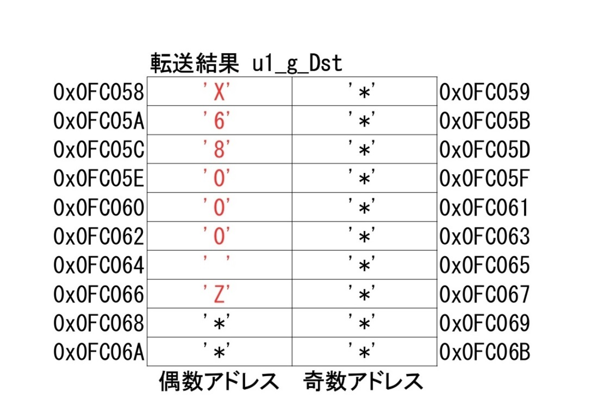
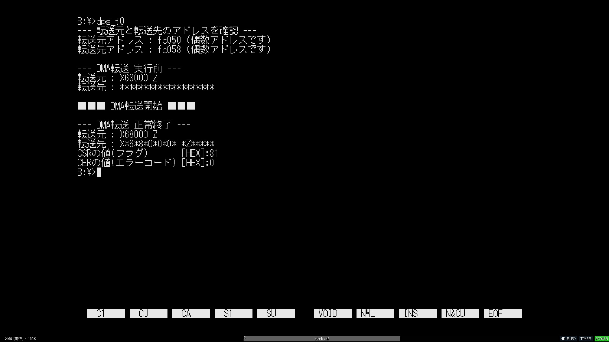
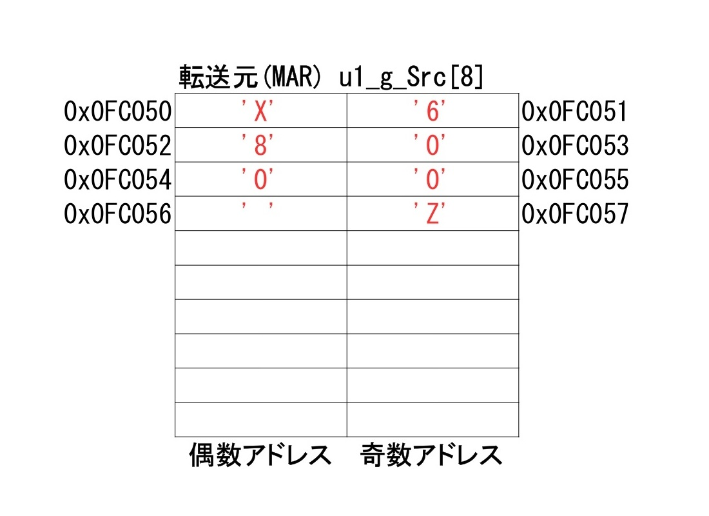
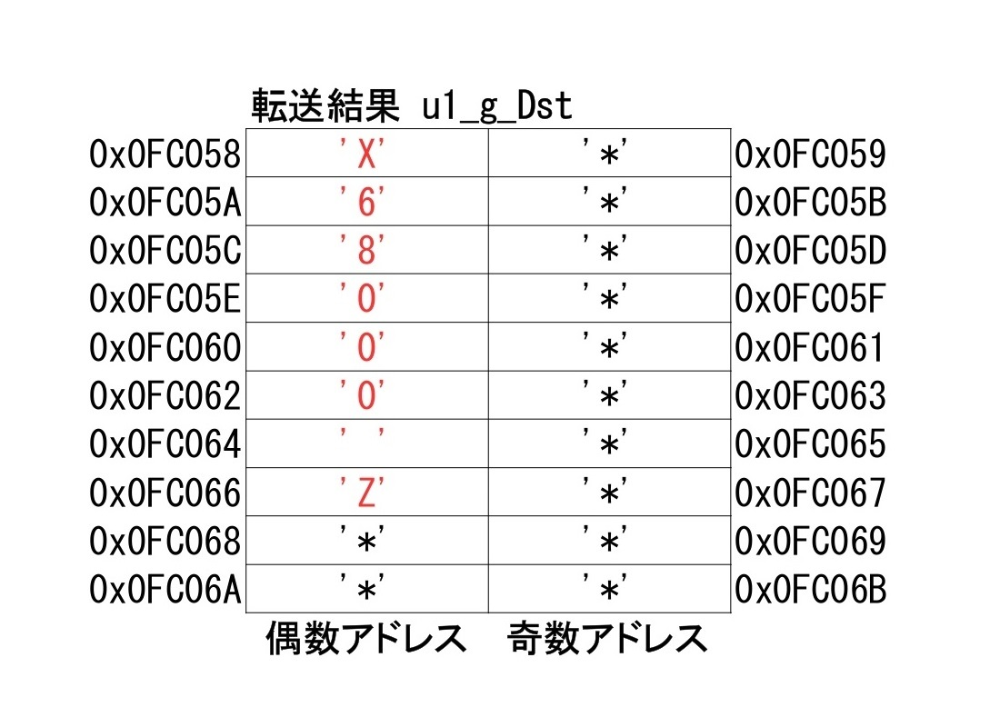
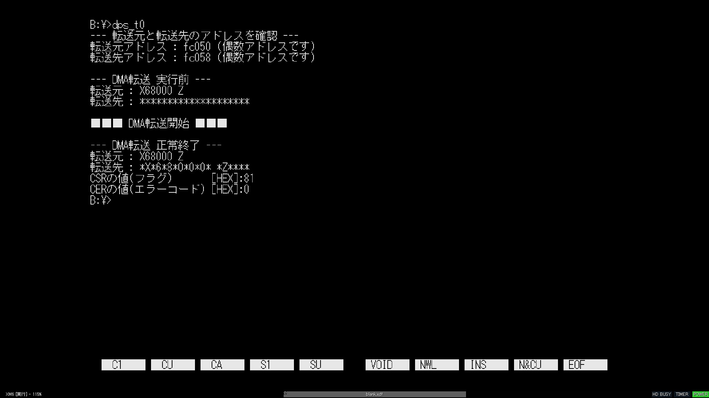
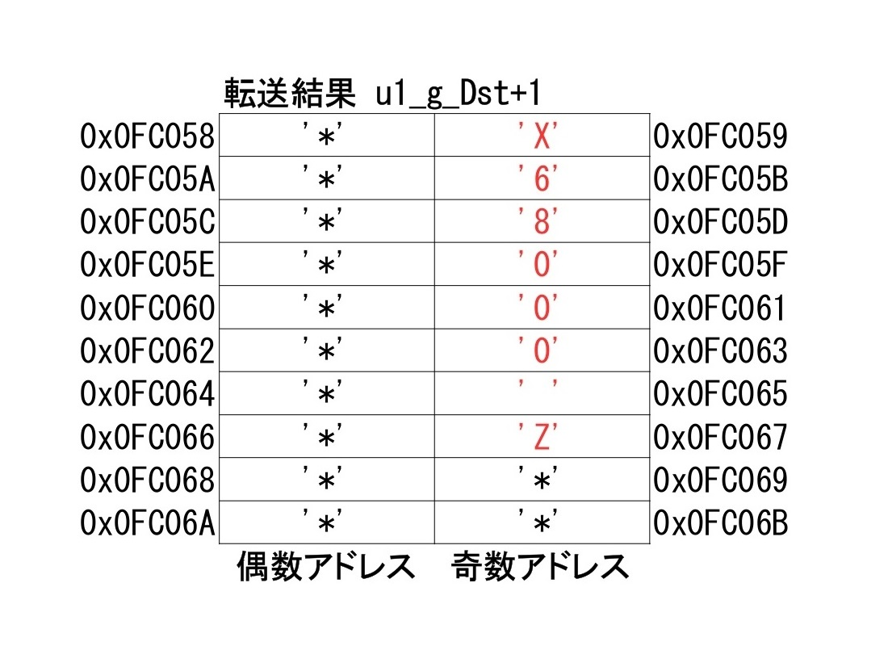

DMA "CPUを介さずデータ転送する魔法" 第5話

2024-05-02 投稿：
前回に引き続き DMAに関する学習内容のアウトプットをさせていただきます。
よろしければ お付き合いください。
前回はコーディングを行い、完成した関数の引数を変更する事で、様々な転送が可能になりました。
複数ブロックの転送には対応していないものの、そこそこ使える物になってきたような気がしています。
作成した関数群は、メモリ→メモリ転送専用の仕様です。
メモリはDPS(デバイスポートサイズ)が16ビットなので、vd_g_BSP_DmaInit()にも通常は引数でDPS16を指定していました。
今回は、このメモリ→メモリ転送において DPS8を指定した場合、どのような挙動となるのかを見てみたいと思います。
いきなり悲しいお知らせ
はいッ！！いきなりですが、現状 (ver.1.6.2) のZ (EAK/PE共に) では、DPS8に設定しても正常に動作してくれません！！！
詳しくは、以下の投稿をご覧ください。
X68000 ZのDMAはDPS8ビット設定時の動作が実機と異なる
試した限り、現状のZはDPS設定を無視して常にDPS16の動作をしているように思えます。
という訳で、今回は 愛しのZちゃんから離れ、実機(CompactXVI)や、XM6(TypeG ver.3.36)を使って学習を進めて行こうと思います。
(悲しい。。。修正されている事を期待しています。。。)
今回のコード
今回のコードも以下に貼っています。
コチラはもともと、この第5話のために書いていたコードだったのです。
(学習中に？？？となって、先に以下のURLの投稿に貼ったという経緯です)
X68000 ZのDMAはDPS8ビット設定時の動作が実機と異なる
第4話のコードからの変更点は、まず転送先のメモリ(配列変数)ですね。
HOGE_FUGA_PIYO とか分かりにくかったので、全て ' * ' で埋め、ついでに要素数も14個から20個にしています。
あとは転送元、転送先、共に配列の要素数を "マジックナンバー撲滅運動" と掲げてマクロにしました。
最後に、main()内にて vd_g_BSP_DmaInit()をコールする際の第5引数(デバイスポートサイズ)をDMA_DSP16からDMA_DSP8に変更しています。
さぁ、準備完了ですね！ コンパイルして実行してみましょう！！
設定内容：
オートリクエスト(最大速度)
転送元：MAR(偶数アドレス)→転送先：DAR(偶数アドレス)のメモリ→メモリ転送
転送元、転送先共に転送毎にアドレスをインクリメント
DPS8(デバイスポートサイズ：8ビットポート)
1バイトを8回転送(1ブロック)
実行結果：

これまで使って来たDPS16では「X68000 Z************」となる所ですが、今回のDPS8では「X*6*8*0*0*0* *Z*****」という結果になりました。
ふむ・・・なんだこれ？
CompactXVI と XM6TypeG ver.3.36 で同じ結果になりますし、動作としては正しそうです。
第4話のコードから、DMACの設定値としてはDPS(デバイスポートサイズ)しか変えてませんしね。
なにが起きているの？？
魔導書(Inside X68000)の45ページから46ページにかけて説明がありました。
要約すると"MAR→DAR転送でDPS8の場合は転送先が2番地おきになる"との事です。
転送サイズを 2バイトや 4バイトにしても同様です。(確かInside X68000には書かれてはいませんが)
試しに、今は 1バイトを8回転送にしていますが、2バイトを4回転送や、4バイトを2回転送にしてみて下さい。
1バイト8回転送と全く同じ結果(X*6*8*0*0*0* *Z*****)になります。
図で見てみましょう。
まず、転送元であるu1_g_Src[8]と、転送先であるu1_g_Dst[20]の状態は以下のようになっています。


ここで、MAR→DARでDPS8の転送を実行した場合、u1_g_Dst[20]の状態が以下のようになります。

なお、DPS16の場合、転送サイズを1バイト以上、転送元か転送先の何れかのアドレスが奇数番地の設定にすると転送エラーとなりますが、DPS8の場合は転送元や転送先が奇数アドレスでもエラーになりません。
(CompactXVI及びXM6TypeG ver.3.36にて確認)
試しにvd_g_BSP_DmaInit()の第2引数(転送先)を、u1_g_Dstからu1_g_Dst+1に変更してみましょう。
実行結果は以下のようになります。
実行結果：

XM6TypeG ver.3.36の画像ですが、CompactXVIでも同じ結果です。
あっ済みません。。。アドレスの表示はu1_g_Dstのままになっています。
なので、転送先の実際のアドレスは+1して0x0FC059(奇数番地)です。
あとDMA転送 正常終了の後の転送先の値もu1_g_Dstを表示するようになってます。
ややこしくなってしまい、申し訳ありません。。。
この場合、u1_g_Dst[20]の状態が以下のようになっています。

因みに、DARを転送元、MAR転送先にすると転送結果がよく分からない事になります。
実機(CompactXVI)とXM6(TypeG ver.3.36)でも実行結果が異なったりするので、やらない方が良いと思います。
参考：
X68000 ZのDMAはDPS8ビット設定時の動作が実機と異なる
確認番号4 (dps_t4.cc)
DPS8設定だと何かメリットがあるの？
Inside X68000では、256色や16色モードのときのグラフィック画面で上位ビットが意味を持たないときを例に出しています。(転送先を+1して奇数番地にするのでしょう)
しかし、思うにグラフィック画面全体に描画するのであればVRAMのアドレスが連続しているので良いのですが、一部に描画する場合は、画像の右端まで行って左端に戻る際にアドレスが連続していません。
X68kにおけるDMA転送は、転送"先"のアドレスが連続していなくてはなりません。
(他の環境のDMAの仕様は分かりませんが)
本連載(？)では扱っていないアレイチェインモードやリンクアレイチェインモードを使うと解決できないか？と、なるかもですが、アレは転送"元"のアドレスが連続していない場合に使う技です。。。
この場合、考えられる方法として、画像の横に1ライン分を転送し、再度DMACにパラメータを設定し直し次のラインを転送。。。といった事を画像の縦幅分繰り返す方法が思いつきます。
何だか大変そうですね。。。それでもCPUを使った転送より高速であれば利用価値があるかもです。(速度は未検証)
と、言いますか、扱い辛さに関してはDPS16にしたとしても同じ事ですね。。。(たぶんDPS8にした方がDPS16より高速なんだろうとは思いますが)
また、冒頭でもお伝えした通り、現状(ver.1.6.2)のZ(EAK/PE共に)では、DPS8設定が無視されます。
Zでも動作するソフトを作りたい場合はDPS8設定を避ける事になります。
逆に考えると、現状のZでも多くのソフトが動作していますが、それらはDPS8設定を使用していない事になります。
DPS8にしなくても多くのソフトが成り立っているという事実から、わざわざZとの互換性(？)を失ってまで使う理由も無い気がします。
以上の理由により、せっかく頑張って勉強しましたが、X68k(Z)においてDPS8に設定するメリットは無さそうというのが個人的な感想ですw
しかし、今回の学習で得た知識は、いつか違う環境でDMA転送を扱う事があったときに役立つかも知れませんね。
Link
・第1話 はこちら
・第2話 はこちら
・第3話 はこちら
・第4話 はこちら
・第5話 はこちら
Archive Note
こちらは X68000 Z コミュニティサイト(Z-CLUB) 過去投稿を修正加筆したものです。
基本的に当時の状況に基づいた内容になっています。
元投稿：https://dev.zuiki.com/project-z/community/post/detail/1040
[EOF]